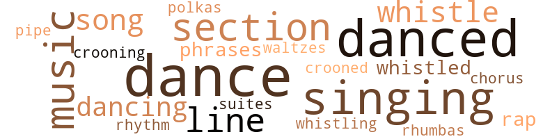
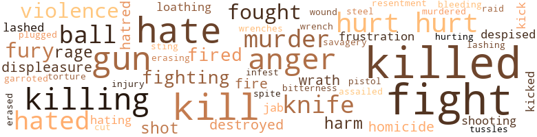

Lila, by Lucas, Curtis (1955)
105 music-related terms matched in this text.
Most frequent terms in this topic: dance (18); danced (16); singing (13); music (10); section (9)
chorus.n.01
Definition: any utterance produced simultaneously by a group
| word | sentence |
|---|---|
| chorus | There was a chorus of blasts from on - coming automobiles . |
croon.v.01
Definition: sing softly
| word | sentence |
|---|---|
| crooned | " Johnny , Johnny , " she crooned , " do n't worry about what he said to you tonight . |
| crooning | She said it over and over again in a crooning voice , and the cold wind outside tore at the windows , trying to get in , rattling and rapping the panes , trying to get in . |
dance.n.01
Definition: an artistic form of nonverbal communication
| word | sentence |
|---|---|
| dance | Humming lightly , Maria admired Carmen as she dressed for the dance . |
| dance | She was going dancing with her cousin , and there would be many boys at the dance , and much fun , and she would enjoy her - self . |
| dance | The third went to the jukebox , inserted a quarter , and played Afro-Cuban dance numbers . |
| dance | He heard dance music but could n't tell where it came from . |
| dance | " Let 's go into the other room and dance , Johnny . " |
| dance | Just danced , one dance after an - other . |
| dance | " Let 's dance , Johnny , " she said . |
| dance | " Leave it alone - just dance . " |
| dances | He took her to movies and dances , and often he took her to bed . |
| dance | On Saturday nights , a movie on Woodward Avenue , or maybe a dance . |
| dances | " It 's all right , but - " " And they have swell dances on Woodward Avenue . " |
dance.v.02
Definition: move in a pattern; usually to musical accompaniment; do or perform a dance
| word | sentence |
|---|---|
| dancing | " Juanito , " she said , " can we go dancing tonight ? " |
dance.v.03
Definition: skip, leap, or move up and down or sideways
| word | sentence |
|---|---|
| danced | And now the foreman , Norman , sank his own right into Johnny 's belly ; as Johnny bent forward the foreman 's left exploded against his jaw and all the yellow lights in the world danced before him . |
| danced | He sat still at the window and continued peering out into the black sea of night where the myriad lights danced far below . |
| danced | For Lila liked the men around her , smiled with them , went out with them , danced with them , and remained just beyond the reach of any of them . |
| danced | So she went to parties and fights and ball games with him , she bowled with him and danced with him . |
| dance | She was hurrying because she knew she would see Johnny Martin there , would drink with him , perhaps dance with him . |
| dance | We came in here to dance . |
| danced | They danced , and it was the way he knew it would be . |
| danced | Lila danced with her large eyes shut ; she spun and dipped , and the wind lifted the full skirt of her green dress , then dropped it softly . |
| dance | " Do n't dance with ier all night . |
| dance | Some of the other fellows like to dance too . " |
| dance | " There 's Blondie and Nina - they want to dance with you . |
| danced | He watched them , saw her smiling as they danced ; he thought she was like an angel and Shor was like an elephant standing on two legs dancing with the angel , and the angel was looking up at the elephant and dancing , smiling all the while . |
| dancing | He watched them , saw her smiling as they danced ; he thought she was like an angel and Shor was like an elephant standing on two legs dancing with the angel , and the angel was looking up at the elephant and dancing , smiling all the while . |
| dance | He saw the tall , thin girl Nina and asked her to dance . |
| danced | He danced with the one called Blondie , and she was a little too drunk . |
| dancing | Once he saw Lila ; she was still dancing with Shor . |
| dancing | And you were dancing with him . " |
| danced | Why did he look at me that way because I danced with you ? " |
| danced | He was a good dancer , and it seemed to her that when they danced he no longer favored his left leg . |
| dance | " I mean , " she said , " you 're doing all right now - you dance like everybody else . |
| danced | They danced , and she was floating again . |
| dance | He had met a girl , a waitress , who loved to dance . |
| danced | And Grace - the girl whom he had loved and danced with and taken to bed - took the side of the Texan . |
| danced | When they danced she stood almost as tall as he ; she stayed close to him , her body fitting easily to his . |
| danced | He danced with this girl , Pearl , and she fascinated him . |
| dance | " You dance swell yourself , " she told him . |
| danced | He danced with the girl from Hamtramck and told her all about farming in Indiana . |
| danced | They danced very close together . |
music.n.01
Definition: an artistic form of auditory communication incorporating instrumental or vocal tones in a structured and continuous manner
| word | sentence |
|---|---|
| music | " Do n't you like to sit here and listen to the music , Johnny ? " |
| music | She pressed a button , and radio music filled the car . |
| music | The radio , turned down low , played soft music . |
| music | He heard dance music but could n't tell where it came from . |
| music | Now the music was soft , and each clear note cut sharply into the mood of the two dancers . |
| music | They sat outside in her Lincoln Capri , and the music came to them . |
| music | They sat there and were silent , and the music washed over them . |
| music | Al - ready the orchestra was playing , and a few couples were dancing , their feet and bodies jerking to the mambo music . |
| music | She smiled , and as the music changed to a waltz , she Started floating again . |
| music | Once again the loud Afro-Cuban music blared . |
phrase.n.02
Definition: a short musical passage
| word | sentence |
|---|---|
| phrases | Wild , young soldiers , they had gone to many bars across the border , had slept with Mexican women , and had picked up a great many Mexican phrases . |
| phrases | Then he cursed John roundly , using some of the vilest phrases he had picked up across the border . |
pipe.n.04
Definition: a tubular wind instrument
| word | sentence |
|---|---|
| pipe | The electricians strung their cable wire , the ironworkers erected their steel , the plumbers laid pipe , the steamfitters installed the heating system , the teamsters drove their trucks . |
polka.n.01
Definition: music performed for dancing the polka
| word | sentence |
|---|---|
| polkas | She smiled , she laughed , she from fox trots to rhumbas to polkas to waltzes with ease , seeming to float in his arms , yet keeping her body ever close to his . |
rap.n.05
Definition: genre of African-American music of the 1980s and 1990s in which rhyming lyrics are chanted to a musical accompaniment; several forms of rap have emerged
| word | sentence |
|---|---|
| rap | Once she rap her hand over her long heavy hair reflectively . |
| rap | But you had a guy killed some time ago , Smitty , and you 've got him all set up to take the rap for it . |
rhythm.n.04
Definition: the arrangement of spoken words alternating stressed and unstressed elements
| word | sentence |
|---|---|
| rhythm | The relentless fist beat into the boy 's face again and again , until his head rang in a rhythm of agony . |
rumba.n.01
Definition: syncopated music in duple time for dancing the rumba
| word | sentence |
|---|---|
| rhumbas | She smiled , she laughed , she from fox trots to rhumbas to polkas to waltzes with ease , seeming to float in his arms , yet keeping her body ever close to his . |
section.n.01
Definition: a self-contained part of a larger composition (written or musical)
| word | sentence |
|---|---|
| section | All that was dismal and in sharp contrast to this thriving industrial city which poured million and millions of dollars into new machinery every year , East of Woodward he found a section where everythin gave evidence of dire poverty - a section of dirty shacks and hock shops , of taverns of the ginmill variety , and a horde of miserable winos begging for the dimes they would need for the next drink . |
| section | All that was dismal and in sharp contrast to this thriving industrial city which poured million and millions of dollars into new machinery every year , East of Woodward he found a section where everythin gave evidence of dire poverty - a section of dirty shacks and hock shops , of taverns of the ginmill variety , and a horde of miserable winos begging for the dimes they would need for the next drink . |
| section | A terrifying feeling of revolt overcame him , a horror of all that section . |
| section | Now that he felt oppressed , now that the feeling of being shut in - of being suffocated and slowly crushed by a tide , free world into which he could n't quite enter - was upon him , he drove out of that blighted section . |
| section | Knowing this section by now , he read the news with passing interest But lower down he saw something that made him read very slowly and carefully . |
| section | After that a picket fence was thrown around the entire section , and armed guards patrolled the grounds by night . |
| section | He had come up in Old Detroit , had been born and reared in that blighted section where Detroit 's finest families had once lived . |
| section | On the job he was a familiar and well-liked figure now , walking from one section of the huge construction area to another . |
| section | He advertised in the newspapers and placed his name in the classified section of the telephone directory and got enough clients to pay his rent and eat . |
sing.v.02
Definition: produce tones with the voice
| word | sentence |
|---|---|
| singing | She was singing happily , and the sound of her voice annoyed him . |
| singing | The blonde girl who had too much to drink came into the room , still singing snatches of song . |
| singing | A woman 's voice was singing " Sweet Slum - ber , " and it was a mellow , sad , hauntingly beautiful voice . |
singing.n.01
Definition: the act of singing vocal music
| word | sentence |
|---|---|
| singing | He lay still , listening , and he could hear her singing softly . |
| singing | Carmen went down the steps in front of Juan , her shoes making small sounds on the steps , her heart singing . |
| singing | He lay there in the bed and watched her go , and there was a singing in his heart , and he felt fine . |
| singing | She was standing there talking about marriage , while his heart was singing , " Lila - Lila - Lila . " |
| singing | It kept singing that over and over , but Pearl expected him to marry her and let her nurse him back to health . |
| singing | She washed the dishes , enjoying the task of cleaning up after him , singing as she worked . |
| singing | She went into the bathroom , still singing . |
| singing | She just stood there alone with all the peo - ple moving about her , and she was singing . |
| singing | Just singing enough off key for him to know she was n't sober . |
| singing | And then he saw Lila , and he forgot about the tall thin girl and the singing blonde girl . |
song.n.01
Definition: a short musical composition with words
| word | sentence |
|---|---|
| song | The blonde girl who had too much to drink came into the room , still singing snatches of song . |
| song | He sat very still , and the unhappy sad song drifted to them . |
| song | And that song - that damn , sad , beautiful sweet slumber song floated about him . |
| song | And that song - that damn , sad , beautiful sweet slumber song floated about him . |
| song | She twisted and spun , swinging her hips , pulling out and coming in close again , humming the song the band was playing . |
suite.n.01
Definition: a musical composition of several movements only loosely connected
| word | sentence |
|---|---|
| suites | On the screen he saw the well-dressed men , the swell-looking women , the hotel suites , the mixed drinks , and all the other things that went with money . |
tune.n.01
Definition: a succession of notes forming a distinctive sequence
| word | sentence |
|---|---|
| line | Now he walked slowly toward the long line of low shanties , nodding to all the other workers who poured in through the gate , remembering their faces and names , feel - ing a sort of ownership in them , knowing that , one way or the other , every one of all the thousands of them would earn money for him . |
| line | Far down below a long line of concrete trucks waited to be unloaded , each driver sitting about , waiting his turn . |
| line | I have to be rough with them when they get out of line . |
| line | And now a young punk - an apprentice carpenter who hardly knew how to drive a nail or saw along a straight line - had tried to get smart with Smitty . |
| line | Wherever the far-flung syndicate worked its cancer-like growth , he had been called upon to kill in order to keep people in line . |
| line | We have to keep the men in line . " |
| line | Those underlings who incurred his displeasure , those who got out of line , those who cheated him or stole from him or lied to him , Shor crushed ; out with no more compunction than one exercises when he crushes out a lighted cigarette . |
waltz.n.03
Definition: a ballroom dance in triple time with a strong accent on the first beat
| word | sentence |
|---|---|
| waltzes | She smiled , she laughed , she from fox trots to rhumbas to polkas to waltzes with ease , seeming to float in his arms , yet keeping her body ever close to his . |
whistle.v.01
Definition: make whistling sounds
| word | sentence |
|---|---|
| whistling | Inside the gate now , walking toward the timekeeper 's stall , he started whistling . |
| whistle | Then he heard the shrill blast of a policeman 's whistle . |
| whistled | He whistled softly . |
| whistle | She went down the steps , knowing that she was beauti - ful - that the boys on the street would whistle when they saw her . |
| whistle | The traffic cop had blown his whistle , stopping traffic on the smaller street and allowing the flow of traffic on East Grand Boulevard to move on . |
| whistle | Then , suddenly , the traffic cop jerked alert , started to blow his whistle . |
| whistle | Now the cop was running forward into East Grand Boulevard , blowing loud ear-splitting blasts on his whistle . |
| whistled | Juan had been watching Manuel , but the slim one 's fist whistled through the air and crashed against his jaw . |
334 violence-related terms matched in this text.
Most frequent terms in this topic: killed (35); fight (30); kill (24); hurt (24); hate (20)
abhorrence.n.01
Definition: hate coupled with disgust
| word | sentence |
|---|---|
| loathing | She stood up , and she was breathing heavily , and there was disgust and loathing on her face . |
| loathing | She did n't know until he was standing over her - until she saw the lunacy in his big eyes and the hate and disgust and loathing in his face . |
anger.n.01
Definition: a strong emotion; a feeling that is oriented toward some real or supposed grievance
| word | sentence |
|---|---|
| anger | The anger seemed to have died during the night ; men took up all their varied activities , and work up the heart of Old Detroit moved on . |
| anger | In his anger and disappointment at this unreasonable reaction , he had told her to go to hell . |
| anger | He felt the anger flaring up in him . |
| anger | The anger exploded in him . |
| anger | One false move , one step in the wrong direction would arouse Shor 's anger , and all that Smitty had - all that he was - would be wiped out . |
| anger | Shor , who had acquired the nickname " the Beast " in just such fits of anger as this , said . |
| anger | Johnny flushed in anger . |
| anger | She could hear the anger and hate in his voice , the in - tensity of it shocking her , and she looked at his sullen face . |
| anger | He saw the darts of anger in her eyes , the way her mouth worked with fury . |
| anger | He lay there on the floor , and he began to shake with anger . |
| anger | Boggs showed anger for the first time . |
| anger | The hate and the anger boiled in him . |
| anger | The hate and the anger and the hurt pride that he felt at being kicked had to wait The handsome one he would kill . |
| anger | The anger and resentment and violence that was a part of his heritage . |
| anger | And in his anger he took her into his arms and kissed her roughly . |
attack.v.01
Definition: launch an attack or assault on; begin hostilities or start warfare with
| word | sentence |
|---|---|
| assailed | Now is he went about his work for the construction company and for the syndicate , inner doubts assailed him . |
bleeding.n.01
Definition: the flow of blood from a ruptured blood vessel
| word | sentence |
|---|---|
| bleeding | Johnny lashed at his mouth and sent long , looping rights to the bleeding nose which was no longer quite so hooked . |
contemn.v.01
Definition: look down on with disdain
| word | sentence |
|---|---|
| despised | She went with them and despised them , knowing that they were weaklings and carrion ; in the mustiness of fire-gutted build - ings she served them and wheedled money from them . |
| despised | To be despised by the people of Spain , who called them mongrels . |
cut.n.05
Definition: a wound made by cutting
| word | sentence |
|---|---|
| cut | It could be a bad cut , " the man said . |
destroy.v.04
Definition: put (an animal) to death
| word | sentence |
|---|---|
| destroyed | And something about the way the wrecking men destroyed the old buildings where many of Detroit 's oldest and best families had been born years before was heartless and grim and a little sad . |
| destroyed | Lila was tall , brunette , with hazel eyes so shockingly large that they almost destroyed the perfect beauty of her face . |
| destroyed | This thing that they found in each other - passion , love , lust , or what - ever it might be called - was too precious to both of them to risk its being destroyed by Shor 's rage . |
displeasure.n.01
Definition: the feeling of being displeased or annoyed or dissatisfied with someone or something
| word | sentence |
|---|---|
| displeasure | Vicious enough to drop a ce - ment block on the head of one of his own underlings who had incurred his displeasure , then help the man collect a fat compensation check for the " accident . " |
| displeasure | Those underlings who incurred his displeasure , those who got out of line , those who cheated him or stole from him or lied to him , Shor crushed ; out with no more compunction than one exercises when he crushes out a lighted cigarette . |
| displeasure | They let her alone , for to them she was Shor 's , and they knew she was not worth the price of Shor 's displeasure . |
erase.v.01
Definition: remove from memory or existence
| word | sentence |
|---|---|
| erased | Lila had come to Cleveland because she loved baseball , but Smitty and Shor came because they did not want to be in Detroit when Phil erased the apprentice boy , Ted . |
| Erasing | Erasing everything and ; everybody who stood between him and what he hoped to accomplish . |
fight.n.02
Definition: the act of fighting; any contest or struggle
| word | sentence |
|---|---|
| fighting | That was a woman 's way of fighting . |
| fighting | She shuddered , thinking of all the fighting and blood and violence she had seen since she came to New York to live , and inwardly something shrank back from all of these things . |
| fighting | Manuel fell backward , but he came up fighting . |
fight.n.05
Definition: a boxing or wrestling match
| word | sentence |
|---|---|
| fight | " I had a fight , " he replied in English . |
| fight | " Just a fight , " he mumbled . |
| fight | There seemed to be a sort of fight among them , the one trying to outdo the other , each trying to speed up a little , afraid of losing his job if he fell behind . |
| fights | You are a big , strong boy , and you 've had fights before . |
| fight | He was also aware of the fight , that the foreman was beating him , He was unsteady from the impact of the older man 's powerful blows , and there was a sickness and disgust inside him . |
| fight | The big man was grinning , enjoying the fight . |
| fight | Now the foreman realized that the crowd was against him and the young man was a good fighter , and he tried to finish the fight . |
| fight | It was a wild , grim fight , and other foremen and supervisors were trying to get inside the crowd to stop it . |
| fight | But the workers held the peacemakers off , now and then starting minor tussles to keep the main fight going . |
| fight | Men fight and get their heads busted , and some of them get killed . " |
| fight | That 's why you had a fight with that bastard foreman . |
| fight | The story of the fight was told and retold , and with each telling Johnny Mar - tin became bigger . |
| fight | Or , rather , he is like he once was be - fore he had that terrible fight . " |
| fight | And she remembered that the fight had been three years ago , and now Juanito was nearly a man , and changed . |
| fights | He had his num - ber of fights , the way most kids in East Harlem do , but he was not a bully . |
| fight | " And why do the people fight and curse and kill so much ? " |
| fight | He understood the ways of the landlords , who used the Puerto Ricans in their fight against the Negroes whenever the Negroes complained about high rents and poor housing conditions . |
| fight | It was a long , endless dream in which he was trapped and , fight though he did , there was no escape . |
| fight | She could talk with the musicians on Hastings Street , and she was at home with the fight mob . |
| fights | So she went to parties and fights and ball games with him , she bowled with him and danced with him . |
| fight | The big man had smoothly taken all the fight out of him . |
| fights | We started bowling and going to fights and ball games and things like that . |
| fight | It was not a long fight . |
| fight | It was a bitter , tearing , ripping fight - a man and a boy locked together , the boy intent upon killing , and the man fighting for survival . |
| fight | The M.P. 's won the fight . |
fight.v.02
Definition: fight against or resist strongly
| word | sentence |
|---|---|
| fought | The men - they ate too much and guzzled too much beer and fought too much . |
| fight | A kid whom other workers would trust , but who could fight if he had to . |
| fight | These poor bastards are afraid to fight him . |
| fight | He had to take his time , fight more carefully . |
| fought | Now they set and they fought , wildly , savagely . |
| fight | " Let 'em fight . " |
| fight | We ca n't let 'em fight on th ' job . |
| fought | They fought doggedly now , and the construction workers pressed ever closer , shouting encouragement . |
| fought | The smile had long since gone from his face , and they fought grimly , toe to toe , wordlessly , battering each other , with hate driving them on and helping them to endure all the blood and sweat and pounding fists . |
| fought | Now Johnny fought with a wild fury , enjoying the impact whenever his fists smashed into the foreman 's face and body . |
| fighting | " What were you fighting about ? " he asked when he finished . |
| fight | They drink a lot , they gamble a lot , and they love to fight . |
| fight | He sure can fight . " |
| fight | But he can fight . " |
| fought | In the agony of his dreams he fought again with the pimp Manuel , and the tall one and the short one , Chico . |
| fight | She knew she could n't fight Manuel 's plans much longer . |
| fought | She struggled and fought and tried to escape . |
| fighting | It was a bitter , tearing , ripping fight - a man and a boy locked together , the boy intent upon killing , and the man fighting for survival . |
frustration.n.03
Definition: a feeling of annoyance at being hindered or criticized
| word | sentence |
|---|---|
| frustration | And , in her frustration , she would find herself on the verge of flying into a wild , screaming rage , and check herself . |
| frustration | He was with her , and she was the answer to all his wanting and hunger and pain and grief and frustration . |
fury.n.01
Definition: a feeling of intense anger
| word | sentence |
|---|---|
| fury | His clenched fists punched the air at his sides and his thin face was drawn into fury . |
| fury | Now Johnny fought with a wild fury , enjoying the impact whenever his fists smashed into the foreman 's face and body . |
| rage | And , in her frustration , she would find herself on the verge of flying into a wild , screaming rage , and check herself . |
| fury | He was in a fury , and dangerous . |
| rage | Smitty had become angry , and Shor had flown into a rage . |
| rage | The Beast was trembling with rage . |
| fury | She was up from the lounge like a cat , and he was surprised at the way her face changed from weary misery to violent fury . |
| fury | He saw the darts of anger in her eyes , the way her mouth worked with fury . |
| rage | This thing that they found in each other - passion , love , lust , or what - ever it might be called - was too precious to both of them to risk its being destroyed by Shor 's rage . |
| Fury | Fury stung him . |
| fury | Then he hit Manuel , hard , putting all his hate and fury and bitterness into the blow . |
garrote.v.01
Definition: strangle with an iron collar
| word | sentence |
|---|---|
| garroted | Kneeling , he unbuckled the unconscious man 's belt and pulled the belt from the trousers of the black suit Then he garroted Manuel with his own belt . |
gun.n.01
Definition: a weapon that discharges a missile at high velocity (especially from a metal tube or barrel)
| word | sentence |
|---|---|
| gun | He walked into the station , his hand on the gun in his pocket , and quietly demanded the money in the till . |
| gun | The gun would be there . |
| gun | The gun spoke . |
| gun | My friends live on what ley earn with their own hands , not with a gun . |
| gun | He bought a gun about a month ago - he keeps it in his car . " |
| gun | Now he took the gun out of the glove compartment , looked at it , put it back . |
| gun | He did n't know whether he had been wise or not to buy the gun . |
| Guns | Guns were bad business . |
| gun | Then he took the gun from the glove compartment , thrust it under his belt . |
| gun | He laughed , and the gun felt hard and warm stuck there inside his belt . |
| gun | Johnny smiled , relaxed , and he felt the warmness of the gun under his belt . |
| gun | He shot him and heard the sharp crack of his gun and felt its jerk in his hand . |
| gun | He jumped out of the bed , ran to the window , looked out He ran to the dresser , opened a drawer , snatched out the gun . |
| gun | Somehow he managed to dress , holding the gun in his hands . |
| gun | He turned toward the door , holding the gun tense . |
| gun | There was a heavy thud against the door , and he shot twice , the gun roaring in the closeness of the room . |
| guns | For a long time he knelt there beside her , not hearing the guns and the tinkling glass and the splintering of the door . |
| gun | His gun roared again and again in the hall , until the trigger finally clacked on empty chambers . |
| gun | Then he threw the gun from him , ran straight up the stairs . |
harm.v.01
Definition: cause or do harm to
| word | sentence |
|---|---|
| harm | He was n't asking asked to harm his fellow man . |
hassle.n.02
Definition: disorderly fighting
| word | sentence |
|---|---|
| tussles | But the workers held the peacemakers off , now and then starting minor tussles to keep the main fight going . |
hate.n.01
Definition: the emotion of intense dislike; a feeling of dislike so strong that it demands action
| word | sentence |
|---|---|
| hate | The smile had long since gone from his face , and they fought grimly , toe to toe , wordlessly , battering each other , with hate driving them on and helping them to endure all the blood and sweat and pounding fists . |
| hate | He never killed for hate , he did not kill for spite , and revenge had no part in it . |
| hatred | He felt sud - den hatred for Moe , and he was casting around for a suitable retort when the cement finisher called . |
| hate | She could hear the anger and hate in his voice , the in - tensity of it shocking her , and she looked at his sullen face . |
| hatred | His face was handsome , and right now it was stern and full of hatred . |
| hate | " Why is there so much hate here ? " she asked Juan . |
| hate | " There is too much hate . |
| hate | Her black eyes were on the door through which he had gone , and they were bright and filled with hate . |
| hate | Her eyes were twin spots of shining-bright hate . |
| hate | He spent a long time lying there , with all her venom and hate keeping him helpless , preventing him from getting upj.At the hospital the doctors had told him that from then oh it would all be a question of will , that he must not let this knee condition whip his mind . |
| hate | She did n't know until he was standing over her - until she saw the lunacy in his big eyes and the hate and disgust and loathing in his face . |
| hate | The hate came up inside him , so that he looked at the detective hard , saying nothing . |
| hate | The hate and the anger boiled in him . |
| hate | The hate churned inside him . |
| hate | The hate and the anger and the hurt pride that he felt at being kicked had to wait The handsome one he would kill . |
| hate | Then he hit Manuel , hard , putting all his hate and fury and bitterness into the blow . |
| hatred | He had fled from East Harlem seething with hatred for all the things which made his people gather themselves into a crowded tenement section . |
hate.v.01
Definition: dislike intensely; feel antipathy or aversion towards
| word | sentence |
|---|---|
| hated | After all this time , he still hated the police . |
| hated | He hated the nickname . |
| hated | Worse still he hated the job he had to take in an automobile parts factory when he returned to Detroit . |
| hating | Late in the afternoon of his third day on the job , Johnny was swinging his pick , hating it , when he saw the shadow fall across the pierhole . |
| hated | He started for the tall foreman , and everything that Johnny hated came up in him . |
| hates | The carpenter hates the ironworker , the laborer hates the carpenter , the bricklayer watches everybody , the cement-finisher thinks other people are stealing his work . |
| hates | The carpenter hates the ironworker , the laborer hates the carpenter , the bricklayer watches everybody , the cement-finisher thinks other people are stealing his work . |
| hate | They wo n't hate you the way they hate me . |
| hate | They wo n't hate you the way they hate me . |
| hate | I hate this place . |
| hating | It is like it was in Puerto Rico after the storm - all this hating and filth and poverty . |
| hate | " I just hate to see a woman take so much for granted . " |
| hate | I hate to see a man get drunk . " |
| hated | He hated this . |
| hated | He hated all of it . |
| hated | She hated it all , yet she trailed the elusive dollar with the rest ; she roamed Fifth Avenue , just off Central Park , along with all of the pimps , the dope peddlers and the putas . |
| hate | But I see it now , and I hate him ! " |
| hated | " He acted as if he hated me or something . |
| hated | He acted like he hated my guts . |
| hated | It was swell in college , and I hated to go back home . |
| hated | To be hated and disliked and mis - trusted . |
homicide.n.01
Definition: the killing of a human being by another human being
| word | sentence |
|---|---|
| homicide | At about the same time homicide will get a telephone call , giving them the number of an automobile tag that can be traced to the boy . |
| homicide | That way the boys from the special squad will be happy , and the homicide boys can settle that killing and hit-and-run death . " |
| homicide | But the boys from homicide will have to go be - fore a jury , and they 'll want everything airtight . |
hurt.v.04
Definition: cause damage or affect negatively
| word | sentence |
|---|---|
| hurt | I 've seen men hit on the head , doctor , and hurt bad . |
| hurting | Your head was hurting pretty bad . |
| hurt | I just do n't want to hurt it again . " |
infest.v.01
Definition: invade in great numbers
| word | sentence |
|---|---|
| infest | All the riff-raff , the hipsters , the gangsters , the pros - titutes , and the dope peddlers who infest any thriving in - dustrial city . |
injury.n.01
Definition: any physical damage to the body caused by violence or accident or fracture etc.
| word | sentence |
|---|---|
| harm | I did n't mean any harm . " |
| hurt | When be wanted someone hurt bad and wanted it kept quiet , he arranged an accident . |
| injury | He could arrange any kind of accident , with any degree of injury . |
| harm | It is so easy to come by harm . |
| hurt | Then she noticed the hurt , bitter ex - pression on Shor 's face , and she gave him her sudden , bril - liant smile . |
| hurt | The hurt expression vanished , and the Beast 's fat face beamed with pleasure . |
| hurt | Too many people getting hurt . |
| hurt | They were bad hurt , and they did n't even know it . " |
| harm | " But I did n't mean any harm , Johnny . |
| hurt | He sat there , a big bulk of loneliness and misery , a hurt , puzzled , lost look on all the flesh that was his face . |
| hurt | The hate and the anger and the hurt pride that he felt at being kicked had to wait The handsome one he would kill . |
jab.n.02
Definition: a quick short straight punch
| word | sentence |
|---|---|
| jab | Johnny caught the long , hooked nose with a left jab , then crossed again to the jaw . |
| jab | He felt the sharp , splintering jab of pain in his left knee . |
kick_back.v.02
Definition: spring back, as from a forceful thrust
| word | sentence |
|---|---|
| kick | " If you get out of that hole , boy , I 'll kick your butt all over this job . " |
| kick | You 'll do it , or I 'll kick hell out of you . " |
| kicked | The short one , Chico , kicked him . |
| kicked | The hate and the anger and the hurt pride that he felt at being kicked had to wait The handsome one he would kill . |
kill.v.10
Definition: cause the death of, without intention
| word | sentence |
|---|---|
| killed | Tempers suddenly flaring , streets suddenly full of people , men hurt , maimed , killed . |
| killed | Men muttered about union officials looking the other way while workers got killed . |
| killed | Because I saw a man get killed . |
| killed | If you get a chance to break a strike , the way the Canadian Indians did , maybe you could get in if you do n't get killed first . |
| killed | Men fight and get their heads busted , and some of them get killed . " |
| killed | I have to see to it that money is collected or the job for men hurt or killed , and that the syndicate gets its share . " |
| killed | Or maybe even killed . |
| killed | Sooner or later they jet killed or go to jail . |
| killed | I do n't want to see you go to jail or - or get killed . " |
| killed | Then the three of them sat in the dingy apartment and the girl told them of the hurricane that had killed her mother and father . |
| kill | I 'll kill him for it ! " |
| killed | They used an out-of - town triggerman , the killer himself often spending less than three hours in Detroit , leaving no clues , often not even knowing the man he killed by sight . |
| killing | His name was Phil , and he made a living by killing people . |
| killed | He never killed for hate , he did not kill for spite , and revenge had no part in it . |
| kill | He never killed for hate , he did not kill for spite , and revenge had no part in it . |
| killed | He killed for the same reason a tailor made clothes or a carpenter drove nails . |
| Killing | Killing was his trade . |
| killed | He had killed in New Or - leans , in Miami , in Chicago , Seattle , Los Angeles , Detroit . |
| kill | Wherever the far-flung syndicate worked its cancer-like growth , he had been called upon to kill in order to keep people in line . |
| killed | For a moment he sat still , unnerved , knowing that he had probably killed the woman , and terror washed through him . |
| killed | This was a murder car , and it had struck and probably killed a woman while making its getaway . |
| killed | He told them what happened , from the time Phil arrived at the airport until he killed the apprentice boy and they started their getaway . |
| kill | You had to kill an old woman . |
| kill | So this rat here could kill that boy ? |
| kill | " But do you have to kill ? " |
| Killing | Killing a kid like that and running over an old woman . |
| killed | Just how Smitty had had the boy killed , Johnny was un - certain . |
| killing | " I do n't see you killing yourself . " |
| killed | " The police never did find who killed poor Ted , " Moe said . |
| killed | Why had Moe mentioned the apprentice boy that was killed the week before . |
| kill | They could kill a man , easy . |
| killed | Do you realize four men have been killed on this job since it started ? " |
| killed | And a fifth man has been killed because of this job , he thought , remembering the apprentice . |
| killed | Nobody meant for them to get killed . |
| killed | Men were killed . |
| killed | It 's a wonder we both ai n't killed . " |
| killed | " Too many men have been killed on this job , " he screamed hysterically . |
| killed | " It 's a wonder we ai n't killed too ! " |
| killed | Christ , we might have been killed . |
| kill | " And why do the people fight and curse and kill so much ? " |
| killed | There was nothing about this huge man to indicate that he could order another man to be killed in cold blood . |
| killed | " You nearly got him killed , that 's how much you like him . |
| killed | But you had a guy killed some time ago , Smitty , and you 've got him all set up to take the rap for it . |
| killed | To have one 's own cousin debased and killed . |
| killed | I hope the big-eyed bitch gets you killed . " |
| kill | That , instead of driving his car to Cleveland to a ball game , they had used it to kill the apprentice boy . |
| kill | " I 'm going to kill him , " Juan vowed . |
| kill | He did n't tell anybody that he was going to kill the pimp . |
| kill | Wilson is his right - hand man , but if he ever touches me again , Shor would kill him . " |
| kill | His eyes rested long on the hand - some one , and he thought , " There is the one I will kill . " |
| killed | That punk detective working for the insurance company has made some report to the police about that apprentice and the old woman killed by Johnny 's car . |
| kill | " If I meet up with him , " Shor snarled , " I kill him . |
| kill | With these two hands I kill him . " |
| kill | The hate and the anger and the hurt pride that he felt at being kicked had to wait The handsome one he would kill . |
| kill | Innocent , not like one who would kill a cop . |
| kill | And he looked into the face of Manuel and thought , " I 'll kill you I I 'll kill youl " Summer came and went . |
| kill | And he looked into the face of Manuel and thought , " I 'll kill you I I 'll kill youl " Summer came and went . |
| kill | Then he went out to kill Manuel . |
| kill | Day after day he stalked the pimp , knowing that eventually he would be able to kill him . |
| kill | " I come to kill you . " |
| kill | Manuel said , " For what do you want to kill me ? " |
| kill | " I come to kill you for Carmen - for what you did to her . " |
| killed | Yet he won - dered what she would say if she knew that he was a Puerto Rican , that he was living under an assumed name , that he had killed a man in Spanish Harlem . |
killing.n.01
Definition: an event that causes someone to die
| word | sentence |
|---|---|
| killing | It made a big splash , and everybody knew it was a killing . |
| killings | There had been very few cold-blooded killings , and those had been carefully planned . |
| killing | That way the boys from the special squad will be happy , and the homicide boys can settle that killing and hit-and-run death . " |
| killing | At last she got the station , and the announcer 's voice came through : " Here 's a further bulletin on the killing earlier to - night of a detective in the parking lot of The Little Delilah nightclub ... All police are on the look-out for John Martin , young owner of the club - age twenty-four - height five-feet - ten or eleven - weight about a hundred and sixty - dark complexion - darkish hair - walks with a limp - Martin was driving new Pontiac which was later found abandoned - po - lice believe he is still in town - Martin is also wanted for questioning in the killing of a construction worker early last fall and in the hit-run death of an elderly woman - this man is armed and dangerous . . . . " Lila cut off the radio and stood looking at Johnny , look - ing him full in the face . |
killing.n.02
Definition: the act of terminating a life
| word | sentence |
|---|---|
| killing | But an obvious killing was a different thing . |
| killing | " Green enough to let you hang a killing on him ? " |
| killing | The Detroit police had made no headway in the killing of the apprentice boy and the hit-and-run death of the woman ; but every bookie and runner in the city knew what it was all about . |
| killing | Still the killing of the apprentice boy nettled him . |
| killing | " We 'll put other men on the killing . |
| killing | They 'll be glad to grab him and pin the killing on him . |
| killing | At last she got the station , and the announcer 's voice came through : " Here 's a further bulletin on the killing earlier to - night of a detective in the parking lot of The Little Delilah nightclub ... All police are on the look-out for John Martin , young owner of the club - age twenty-four - height five-feet - ten or eleven - weight about a hundred and sixty - dark complexion - darkish hair - walks with a limp - Martin was driving new Pontiac which was later found abandoned - po - lice believe he is still in town - Martin is also wanted for questioning in the killing of a construction worker early last fall and in the hit-run death of an elderly woman - this man is armed and dangerous . . . . " Lila cut off the radio and stood looking at Johnny , look - ing him full in the face . |
| killing | It was a bitter , tearing , ripping fight - a man and a boy locked together , the boy intent upon killing , and the man fighting for survival . |
knife.n.02
Definition: a weapon with a handle and blade with a sharp point
| word | sentence |
|---|---|
| knife | Chico waved his knife . |
| knife | He sat in the booth opposite Juan , and he played with his fingernails with the open blade of a pocket knife . |
| knife | The short one , Chico , stood a little back , the knife in his hand . |
| knife | The little one , Chico , moved in close and jammed his knife to Juan 's side . |
| knife | I 'll spill your guts with this knife . |
| knife | You make a mistake if you do n't let me spill his guts with my knife . " |
| knife | Every time you drink you want to spill somebody 's guts with your knife . " |
| knife | The little one , Chico , played with his fingernails with the knife and watched Juan closely . |
| knife | The little one , Chico , played with his knife . |
| knife | He leaned forward , the knife now still . |
malice.n.01
Definition: feeling a need to see others suffer
| word | sentence |
|---|---|
| spite | He never killed for hate , he did not kill for spite , and revenge had no part in it . |
murder.n.01
Definition: unlawful premeditated killing of a human being by a human being
| word | sentence |
|---|---|
| murder | Johnny read of the murder of the girl , and he thought of Carmen . |
| murder | He knew it was foolish to keep remembering her , yet the sights of Old Detroit and the murder of the girl from Lansing served together to bring vivid memories back to him . |
| murder | And now Smitty would tell him to drive a murder car and point out the victim to an imported killer . |
| murder | This was a murder car , and it had struck and probably killed a woman while making its getaway . |
| murder | " Do you have to murder ? |
| murder | He knew that Smitty was somehow connected with the boy 's murder . |
| murder | He did not want to be connected with anything so violent as murder , and he knew the apprentice had been murdered . |
| murder | It had been hard to believe the night before , lying there in the bed with Lila , that Smitty , who had befriended him on the job , would deliberately set him up for a murder frame . |
| murder | They had him neatly framed for a murder and a hit-and-run death , and they could send him to prison for the rest of his life . |
| murder | He was wanted for murder . |
murder.v.01
Definition: kill intentionally and with premeditation
| word | sentence |
|---|---|
| murdered | He did not want to be connected with anything so violent as murder , and he knew the apprentice had been murdered . |
musket_ball.n.01
Definition: a solid projectile that is shot by a musket
| word | sentence |
|---|---|
| ball | It would be a simple question of survival - play ball or starve . |
| ball | They stood on the steps leading to the ball park , they jammed entranceways and filled corridors . |
| ball | She was smiling as she looked around her at the people and out to the ball field where the players were warming up . |
| ball | Get that ball in there ! |
| ball | Ted , the apprentice boy , stood in the crowded , filled poolroom , glumly chalking his cue stick and watch - ing , while the shark methodically pocketed one ball after another . |
| ball | Ball after ball he pocketed as the soft clacks of the cue ball washed away the last hopes of the apprentice boy . |
| ball | Ball after ball he pocketed as the soft clacks of the cue ball washed away the last hopes of the apprentice boy . |
| ball | Without flourish the shark sank the last ball , and the game was over . |
| ball | " I thought this Johnny was supposed to be on the ball . |
| ball | We know why you played ball with us in the first place . |
open_fire.v.01
Definition: start firing a weapon
| word | sentence |
|---|---|
| fired | On learning about his part in the man 's beating , factory officials had fired him at once and somehow man-aged to bar him from working in other automobile factories . |
| fired | But if a man gave out on the job , they fired him and hired another . |
| fired | " And we had the foreman that sent you and the cement finisher to work under those ironworkers fired . |
| fire | " You try anything and I 'll fire every man you have on he job . |
| fire | " You do n't have to fire them , " Shor said . |
| fire | We do n't want you to fire anybody . |
| fired | This fired Bledsoe 's imagination . |
| fired | He fired again . |
pain.v.02
Definition: cause emotional anguish or make miserable
| word | sentence |
|---|---|
| hurt | I have to fix it so that all the workers hurt on the job get maximum compensation . |
| hurt | I have to see to it that money is collected or the job for men hurt or killed , and that the syndicate gets its share . " |
| hurt | Men keep getting hurt all the time . |
| hurt | But they acted just like they was n't hurt . |
| hurt | He said , " It 's my business to know when a man is hurt and when he is n't . |
| hurt | The boy is not hurt . |
| hurt | The boy 's not hurt . |
| hurt | You do n't care whether he 's hurt or not , so long as you save the company some money . " |
| hurt | After a long time his knee did n't hurt any more . |
| hurt | I 'm so afraid they 'll do something to you - hurt you . " |
| hurt | " They ca n't hurt me . " |
| hurt | Oh , Johnny , you 'll hurt your knee again . " |
| hurt | There 'll plenty of women there , but one more wo n't hurt . " |
| hurt | " We wo n't hurt the detective , " Wilson said . |
| hurt | He went over to her , knelt beside her , knowing that she was badly hurt . |
pistol.n.01
Definition: a firearm that is held and fired with one hand
| word | sentence |
|---|---|
| pistol | Leaving his car , Johnny went up to the gate where a company guard in blue uniform , wearing a holstered pistol , stood . |
punch.v.01
Definition: deliver a quick blow to
| word | sentence |
|---|---|
| plugged | She reached to the switchboard , plugged , said , " Johnny ; Martin to see you . " |
raid.v.01
Definition: search without warning, make a sudden surprise attack on
| word | sentence |
|---|---|
| raid | Tonight , around closing time , the special squad will raid The Little Delilah - I 've already arranged for that . |
resentment.n.01
Definition: a feeling of deep and bitter anger and ill-will
| word | sentence |
|---|---|
| resentment | The anger and resentment and violence that was a part of his heritage . |
| bitterness | Then he hit Manuel , hard , putting all his hate and fury and bitterness into the blow . |
savageness.n.01
Definition: the property of being untamed and ferocious
| word | sentence |
|---|---|
| savagery | On his gross face pas naked savagery . |
shoot.v.02
Definition: kill by firing a missile
| word | sentence |
|---|---|
| shot | Ted , the ap - prentice boy , had been shot dead outside a poolroom in Old Detroit . |
| shot | He shot him and heard the sharp crack of his gun and felt its jerk in his hand . |
| shot | He shot him and saw the surprised disbelief on the cop 's face . |
| shot | But he was innocent - though he had shot the cop , he was innocent . |
shooting.n.02
Definition: killing someone by gunfire
| word | sentence |
|---|---|
| shooting | " What th ' hell 's the use of shooting ? " he demanded . |
| shooting | Every minute or so the foreman would send tobacco-streaked saliva shooting into the pit . |
sting.n.03
Definition: a painful wound caused by the thrust of an insect's stinger into skin
| word | sentence |
|---|---|
| sting | And then the sting of the whiskey hit him , making his elephant-like frame shudder ; he picked up the glass and flung it from him , striking the far wall , watching the glass vanish into flying slivers . |
sword.n.01
Definition: a cutting or thrusting weapon that has a long metal blade and a hilt with a hand guard
| word | sentence |
|---|---|
| steel | Now it was his job to keep one cement finisher supplied with the grout to be worked into the space between the concrete foundation and the thick steel plates onto which the columns were bolted . |
torment.v.01
Definition: torment emotionally or mentally
| word | sentence |
|---|---|
| torture | He liked finesse , de - lighting in the art of torture . |
violence.n.01
Definition: an act of aggression (as one against a person who resists)
| word | sentence |
|---|---|
| violence | The same lewdness , the same pro- fanity , the same sudden , frightening explosions of violence . |
| violence | The quick whine of a police siren , men racing madly away from the scene of violence , vanish - ing into doorways and alleys . |
| violence | I And a moment later , in a spot where violence had raged , would be only the blue of the Detroit police . |
| violence | This was racketeer business , and it could erupt with violence at any time . |
| violence | She shuddered , thinking of all the fighting and blood and violence she had seen since she came to New York to live , and inwardly something shrank back from all of these things . |
| violence | The anger and resentment and violence that was a part of his heritage . |
| Violence | Violence tore at his heart . |
whip.v.04
Definition: strike as if by whipping
| word | sentence |
|---|---|
| lashed | Johnny lashed at his mouth and sent long , looping rights to the bleeding nose which was no longer quite so hooked . |
| lashing | She lay there , and the full force of the hurricane was upon her , tearing and lashing at the frailness of her body . |
| lashed | The winds of the violent hurricane lashed at the frailness of her body , gust after gust , each new one more violent than the last . |
wound.n.01
Definition: an injury to living tissue (especially an injury involving a cut or break in the skin)
| word | sentence |
|---|---|
| wound | " Any scalp wound will bleed , " he explained . |
wrath.n.01
Definition: intense anger (usually on an epic scale)
| word | sentence |
|---|---|
| wrath | Cold wrath ran up and down Johnny 's spine . |
| wrath | To incite the wrath of Shor the Beast was to ask for trouble . |
| wrath | They listened to his tirade silently , fearful of his wrath . |
wrench.n.01
Definition: a sharp strain on muscles or ligaments
| word | sentence |
|---|---|
| wrench | The grease-monkey heard a commotion from the adjoining garage , and after one quick but cautious look , sneaked up behind Smitty and conked him on the head with a wrench . |
| wrenches | Ironworkers moved steadily , using wrenches and drift pins , bolting the columns and beams . |
33 religion-related terms matched in this text.
Most frequent terms in this topic: siren (7); Christ (7); hell (6); fatalism (3); angel (3)
eden.n.01
Definition: any place of complete bliss and delight and peace
| word | sentence |
|---|---|
| heavens | Where were the tall buildings in New York that rose up into the heavens ? |
| heavens | She would go to all the places she saw in the movies , she would buy all the beautiful things she wanted and she would live in the tall buildings which reached up into the heavens . |
fatalism.n.02
Definition: a philosophical doctrine holding that all events are predetermined in advance for all time and human beings are powerless to change them
| word | sentence |
|---|---|
| fatalism | And she felt all the hopelessness and fatalism that she had known during that time of terror . |
| fatalism | Now a feeling of fatalism overwhelmed her . |
| fatalism | The fatalism . |
god.n.03
Definition: a man of such superior qualities that he seems like a deity to other people
| word | sentence |
|---|---|
| god | Making him feel like some kind of god just because he had the say-so over whether a man earned his daily bread or not . |
| God | God has spared you through many dangers . |
| God | " For God 's sake ! " he shouted . |
hell.n.01
Definition: any place of pain and turmoil
| word | sentence |
|---|---|
| hell | And after I do that I 'm going to walk the hell off this job and never come back . |
| hell | It 's take everything for your own trade , and to hell with every other trade . |
| hell | " Get the hell away from here . |
| hell | " Aw , to hell with it , " she said . |
| hell | It was three months of hell for the Puerto Rican who had changed his identity to that of an Indiana farm boy . |
| hell | " Smitty , will you please go to hell and shut up ? " |
jesus.n.01
Definition: a teacher and prophet born in Bethlehem and active in Nazareth; his life and sermons form the basis for Christianity (circa 4 BC - AD 29)
| word | sentence |
|---|---|
| Jesus | " Jesus Christ ! " |
messiah.n.01
Definition: any expected deliverer
| word | sentence |
|---|---|
| Christ | Christ , you ca n't just beat up people and get away with it . |
| Christ | Christ , I do n't care about five or six bucks . |
| Christ | Christ , you give me a pain . |
| Christ | Christ , we might have been killed . |
| Christ | " For Christ 's sake , Pearl , " he said sharply , cutting her off . |
| Christ | " Shor , for Christ 's sake , what the hell are you saying ? |
| Christ | " Jesus Christ ! " |
saint.n.02
Definition: person of exceptional holiness
| word | sentence |
|---|---|
| angel | He watched them , saw her smiling as they danced ; he thought she was like an angel and Shor was like an elephant standing on two legs dancing with the angel , and the angel was looking up at the elephant and dancing , smiling all the while . |
| angel | He watched them , saw her smiling as they danced ; he thought she was like an angel and Shor was like an elephant standing on two legs dancing with the angel , and the angel was looking up at the elephant and dancing , smiling all the while . |
| angel | " You 're an angel , " he told her . |
siren.n.01
Definition: a sea nymph (part woman and part bird) supposed to lure sailors to destruction on the rocks where the nymphs lived
| word | sentence |
|---|---|
| siren | The quick whine of a police siren , men racing madly away from the scene of violence , vanish - ing into doorways and alleys . |
| siren | By the time the long wail of the siren sounded , indicating that it was time for the men to return to work , he knew just what to do . |
| siren | Then the long , low , wailing sound of the siren indicated it was eight o'clock and time to go to work . |
| siren | He laughed be - cause the siren had no meaning for him now . |
| siren | They had only half an hour to do their gambling , and each was trying to get a shot at the dice before the siren sounded . |
| siren | From far off he heard the low wail of a siren . |
| sirens | The forlorn wails of sirens were heard for miles around as radio cars and the ambulance rushed to the scene . |
| siren | When at last they had him free of the wreck , they put him into the ambulance and rushed off toward the hospital , the siren 's agonized wail and the flash of the red revolving light warning other motorists out of the way . |